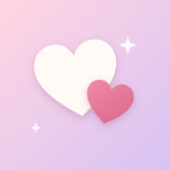

Hoi Davinia
Er staat een cadeautje voor je klaar. Zet me eerst op je beginscherm, dan word ik een echte app.
-
1
Tik op de Deel-knop
Zie je hem niet? Tik dan eerst op •••
-
2
Kies Zet op beginscherm
Even naar beneden scrollen in het menu
-
3
Laat Open als webapp aan staan en tik op Voeg toe
-
4
Open me via het nieuwe hartjes-icoon op je beginscherm.